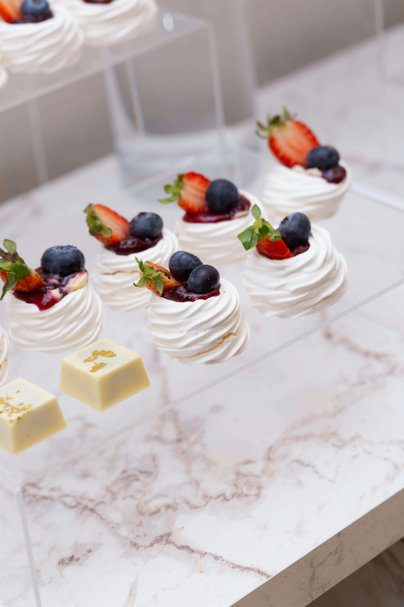

¡Conoce un poco de nuestra historia!

ELIA-Postresnace como una propuesta artesanal inspirada en la belleza de los pequeños detalles y en la dulzura de los momentos compartidos. Fundada por Eli Bard Guastoni, la marca surge con la visión de crear postres delicados, elegantes y memorables, pensados para convertir cada ocasión en una experiencia especial.
Desde sus comienzos, ELIA-Postres nació con la idea de ofrecer una pastelería artesanal donde la belleza, el sabor y los detalles sean protagonistas, creando Petit Fours, alfajores artesanales y delicias clásicas pensadas para transformar cada momento compartido en un recuerdo dulce e inolvidable.
Inspirándose en la delicadeza de la pastelería artesanal y en la belleza de los pequeños detalles, la marca desarrolló una línea propia de creaciones caracterizadas por su estética elegante, sabores suaves y presentación cuidada. Entre ellas se destacan los Petit Fours artesanales, pensados para acompañar celebraciones y momentos especiales con un toque delicado; los alfajores artesanales, elaborados con dedicación y rellenos irresistibles; y los clásicos de pastelería, creados para quienes buscan sabores tradicionales con una presentación única y memorable.
ELIA-Postres fue creada como un espacio delicado y acogedor, donde la estética minimalista, los tonos suaves y la atención en cada detalle permiten resaltar la belleza de cada creación artesanal. En este espacio, cada persona puede descubrir sabores únicos, disfrutar de momentos especiales y experimentar la dulzura desde una mirada elegante y cercana.
Hoy, ELIA-Postres representa una visión clara: combinar delicadeza, sabor y belleza artesanal para crear momentos inolvidables.